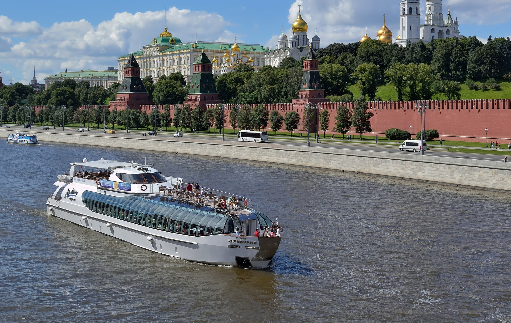

Выходные в Москве
Маршрут на день | Зарядье | Третьяковская галерея
Два простых плана на день. Время указано примерно.
План на день | Сравнить маршруты
Около 3 часов / прогулка
Около 4 часов / музей + прогулка
| Маршрут | Планируемое время | Формат | Посмотреть |
|---|---|---|---|
| Центр и река | Около 3 часов | Прогулка у воды | О месте · Официальный сайт ↗ |
| Искусство и переулки | Около 4 часов |
 Музей и прогулка
Музей и прогулка
|
О месте |
| Москва крупным планом | Нажмите на миниатюру: изображение 600 × 400 откроется по центру новой вкладки. |
 |
|